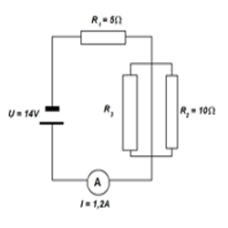
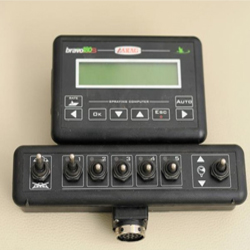
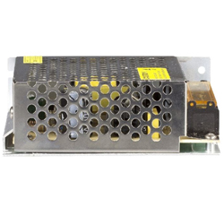
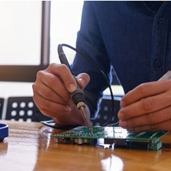
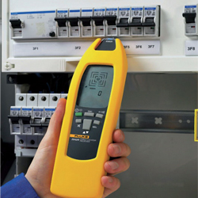

coś nie siadło z javascriptem w header
Technik Elektronik
Elektronika to dziedzina, która wciąż dobrze się rozwija. Każdego dnia korzystamy z urządzeń elektronicznych, nie potrafimy się już bez nich obyć. Jesteś majsterkowiczem? Lubisz konstruować i naprawiać różne urządzenia? A może interesuje cię ich budowa?
Jeśli tak, to jest to kierunek dla ciebie!
Jeśli tak, to jest to kierunek dla ciebie!
Podstawy elektrotechniki i elektroniki

Na tym przedmiocie poznasz pojęcia związane z elektrotechniką, a także symbole graficzne elementów elektrycznych. Nauczysz się również obliczać wartości wielkości elektrycznych w obwodach prądu stałego.
Układy cyfrowe i układy analogowe

Na tych przedmiotach nauczysz się m.in. jak dobierać elementy elektryczne i elektroniczne do określonych warunków obciążenia. Dowiesz się także, jak dokonać analizy układów analogowych kombinacyjnych i sekwencyjnych, i jak sporządzić dokumentację na podstawie pomiarów.
Technika mikroprocesorowa

Na tym przedmiocie nauczysz się, jak programować urządzenia sterujące. Poznasz też funkcje oprogramowania stosowanego w urządzeniach alarmowych i dozorowych oraz dowiesz się jak uruchamiać, regulować, i kalibrować moduły i urządzenia elektroniczne.
Urządzenia elektroniczne

Na tym przedmiocie poznasz zasady instalacji urządzeń elektronicznych. Dowiesz się także, jak określić funkcje i zastosowanie elementów i urządzeń elektronicznych oraz mechanicznych na podstawie ich wyglądu.
Pomiary elektryczne i elektroniczne

Na tych zajęciach nauczysz się obsługi mierników analogowych, multimetrów, omomierzy, mostków RLC i innych przyrządów pomiarowych oraz pomocniczego sprzętu pomiarowego (zasilacza, generatora funkcyjnego i autotransformatora)
Pracownia montażu i instalacji układów i urządzeń elektronicznych

Na tych zajęciach nauczysz się lutowania ręcznego, montowania układów i usuwania usterek powstałych na etapie montażu. Będziesz także demontował urządzenia i selekcjonował je pod względem możliwości recyklingu.
Pracownia eksploatacji urządzeń elektronicznych

W tej pracowni nauczysz się, jak lokalizować uszkodzenia instalacji i urządzeń na podstawie pomiarów. Będziesz także łączył urządzenia i dobierał je do przewidywanych warunków zasilania, a także wykonywał różne operacje na odbiornikach radiowych i telewizyjnych.